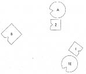
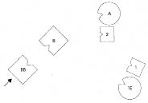
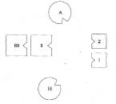
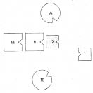
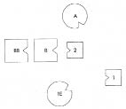
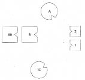
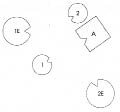
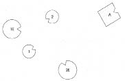
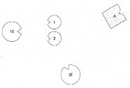
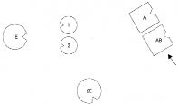

JAN Ailemi dizmek istiyorum.
HELLINGER İyi.
JAN Babam annemden önce bir evlilik geçirmiş, o evlilikten bir oğlu olmuş.
HELLINGER Çocuk kimin yanında büyümüş?
JAN İki yaşına, babamın ölümüne kadar bizde, sonra babamın ana babası yanında dört yıl yaşadıktan sonra annesi onu İtalya’ya aldırmış. Orada da kaldı. Babam hap bağımlısıydı, böbrek iflasından da öldü.
HELLINGER Babanın bu evliliğinin neden ayrılıkla sonuçlandığını biliyor musun?
JAN Söylediklerine göre babamın bağımlılığı yüzünden. Anlaşamamışlar.
HELLINGER Babanın ailesinde özel bir şey yaşanmış mı?
JAN Babamın babası alkolikmiş.
1. Resim

B Baba
1E Babanın ilk eşi, 1’in annesi
1 İlk çocuk, oğul
A Anne
2 İkinci çocuk, oğul (=Jan)
HELLINGER Baba nasıl?
BABA Çok üzgünüm.
HELLINGER İlk eşi nasıl?
BABANIN İLK EŞİ Konumumdan hiç memnun değilim. Bir oğlum olduğunu biliyorum ama kimseyle temasım olmaması beni öfkelendiriyor. Kimseyle ilişkim yok. En azından oğlumun yanında olmak istiyorum.
HELLINGER Oğul nasıl?
İLK ÇOCUK Öylesine gerçek dışı ki bu, oturup üzerine felsefe yapmak isterdim.
HELLINGER Evet, öyle.
Hellinger babasını babanın karşısına yerleştirir. İkisi birbirlerine gülümserler. Sonra baba bir adım geri atar. İlk eşten olan oğul aileye doğru çevrilir. İlk eş, oğlunun yanına yerleştirildiğinde derin bir nefes alır.
2. Resim

BB Babanın babası
HELLINGER Babaya Böyle nasıl?
BABA Çok iyi.
HELLINGER Anne nasıl?
ANNE Kocamın babası gelmeden önce aklımdan arkamı döndüğüm gibi oğlumu alıp gitmek istediğim geçiyordu. Ama babası da geldiği anda eşim yeniden ilginç ve çekici bir hale geldi.
İKİNCİ ÇOCUK Başlangıçta, burada tek başıma dururken, ilginç bir adam olmalı bu, diye düşündüm. Yüzünü daha fazla görmek istiyorum. Anne benim için bir destek. Burada olduğuna seviniyorum. Babamın babası ortaya çıktığında bunun babama iyi geldiğini gördüm, böylece bana da iyi geldi. Öncekinden daha iyiyim böyle.
Hellinger resmi değiştirir.
3. Resim

BABA Bakış açım çok geniş. İki kadından iyi gelen bir enerji alıyorum. Oğullarım görüş açım içinde. Her şey dengede benim için.
İLK ÇOCUK Duygular birbirini izliyor. Kardeşimin yanında olmak iyi ama başka başka yerlerden geldiğimizi de biliyorum.
İKİNCİ ÇOCUK Sol elimde soğuk bir hava akımı hissettim, büyükbaba geldiğinde geçti. Bu iyi.
HELLINGER Jan’a Kendi yerine geç.
Jan dizimdeki yerini alır. Çevresine onaylayarak bakar.
HELLINGER Şimdi seninle küçük bir deneme yapacağım, tamam mı? Erkeklerin ne olduğunu anlaman için.
Hellinger Jan’ı sırtını babasına döneceği şekilde yerleştirir.
4. Resim

JAN Bir süre sonra Bu beni biraz korkutuyor.
HELLINGER Biraz öyle kal.
Uzun bir sürenin ardından İçindeki itkiyi izle. Babaya doğru dön.
Jan yüzünü babasına döner ve onun boynuna atılır. Kucaklaşırlar. Jan hüngür hüngür ağlar.
5. Resim

HELLINGER Jan’a Açık ağızla derin nefes al! Ses çıkarmadan nefes alıp ver! Derin derin nefes alıp ver! Kuvvetle! Gücünü koru! Güç al!
Babanın babasına Onları kucaklayabilirsin.
Babanın babası oğlu ve torununu kucaklar.
HELLINGER Yeniden sakinleşen Jan’a Yerine dön ve herkese bak.
6. Resim

HELLINGER Jan’a Böyle iyi mi?
JAN İyi böyle.
Dizim: Yerinde ayrılık
HELLINGER Hartmut, seninle devam edelim.
HARTMUT Benim tek bir konum var: Canıma okundu ve buna da seviniyorum, çünkü ihtiyarın artık bu işe karışamayacağını biliyorum. Kafamda açık kalan soru, insanın kendi kurduğu ikincil ailesinin ne kadar önem taşıdığı. Çünkü buradaki dizimlerin hemen hepsi köken aileyle ilgiliydi. Öyle bir kadınla evlendim ki kendime şunu soruyorum…
HELLINGER Ne istiyorsun?
HARTMUT Yirmi yıl önce ayrılıkla sonuçlanan kendi kurduğum
aileyle bağımı içsel olarak çözmek istiyorum, çünkü şimdiye dek…
HELLINGER Aileni dizelim, bunu hemen yapmış oluruz.
HARTMUT Tek bir sözcükle olacağını sanıyorum.
HELLINGER Yap!
HARTMUT Yap!
HELLINGER Hayır, baskı yapmadan!
HARTMUT Bunu seve seve yaparım, yalnızca kalan kısıtlı zamanı düşünüyorum. Kimi zaman çözüm getiren sözcüğü anında buluyorsun.
HELLINGER Ailende kimler var?
HARTMUT İlk karım ve iki kızım. Ve ikinci karım. Ondan çocuğum yok.
HELLINGER İlk eşinden neden ayrıldın?
HARTMUT Gitmek istedi.
1. Resim

A Adam (=Hartmut)
1E İlk eş, 1 ve 2’nin annesi
1 İlk çocuk, kız
2 İkinci çocuk, kız
2E İkinci eş
HELLINGER Adam nasıl?
ADAM İlk güdüm büyük ölçüde cinseldi -kızlara karşı. Emin olamadığım, bir yer değişikliğiyle güdünün azalıp azalmayacağını görmek istediğim için Hartmut’tan yerimde düzeltme yapmasını istedim. Ama hâlâ devam ediyor. Diğer aile bireylerini algılamıyorum.
HELLINGER İlk eş nasıl?
İLK EŞ Çok öfkeliyim, özellikle de ilk çocuk bana güldüğünde. Arada durduğunu, yerinin orası olmadığını hissediyorum.
Baba büyük kıza güler.
HELLINGER Büyük kız nasıl?
İLK ÇOCUK Asıl dikkatim babaya yöneliyor. Onunla görülecek bir hesabım var. Anneyi temsil ediyormuşum gibi bir izlenimim var. Babanın aklını başına getirmek gerek.
İKİNCİ ÇOCUK Burada kendimi yerimde hissetmiyorum. Bana bir santim daha yaklaşacak olursa dövüşürüm onunla. Anneye mi, babaya mı daha çok öfkeli olduğumu bilemiyorum.
İLK ÇOCUK Kız kardeşimin orada işi ne diye düşündüm.
İKİNCİ EŞ Adama çok öfkeliyim. Öfkeden boynuma kramp giriyor. Kendimi dışlanmış hissediyorum. Kullanılmış ve dışlanmış.
Hellinger resmi değiştirir.
2. Resim

HELLINGER Hartmut’un temsilcisine Şimdi nasıl?
ADAM Pencereden katedrali görüyorum.
HELLINGER Kendini nasıl hissediyorsun?
ADAM Beni kendisine çekiyor. Gerçekten. Boş laf değil bu. Oraya gidebilirim. Arkamdakileri artık hiç hissetmiyorum.
HELLINGER İlk eş nasıl?
İLK EŞ Bu bence iyi. Kızlarla açığa kavuşturmam gereken bir şey varmış gibi hissediyorum.
İLK ÇOCUK Biraz kızgındım burada. Önce onunla (baba) görülecek bir hesabım olduğunu düşünüyordum, şimdiyse öylece çekti gitti. Onu arkasından boğabilirim.
Hellinger resmi bir kez daha değiştirir.
3. Resim

HELLINGER Böyle nasıl?
Anne ve kızlar birbirlerine gülerler.
İKİNCİ ÇOCUK Az önce gittiğinde ortam aydınlanmaya başladı. Bu, annenin bizimle açığa kavuşturacağı bir şeyi olduğunu söylemesiyle daha da arttı.
İKİNCİ EŞ Kendimi yeniden özgür hissediyor ve gitmek istiyorum.
HELLINGER Hartmut’a Ayrılıklar yerinde.
ADAM İlkinin üzerine gelen ikinci bir duygu var içimde: Felç olmuşum, çakılıp kalmışım gibi.
HELLINGER Hartmut’a Köken sisteminde olağandışı ne yaşanmış?
HARTMUT Annem babamla sevmeden evlenmiş. Annemin yakınında olmak istediği dayımla özdeşleştim ben. İlk karım evlenmek, çocuk sahibi olmak istemiyordu. Bu iki şeye de ikna etmem uzun zaman aldı.
HELLINGER Köken ailendeki kilitlenme açısından bunu yapmamalıydın. Bu nedenle de gitmen ve aileni bırakman yerinde.
HARTMUT Peki benim ne yapmam uygun olur?
HELLINGER Ben yalnızca burada görüneni gösteririm. Bunun dışında görüş belirtmek bana düşmez. Kendi yerine geçmek ister misin?
Hartmut dizimdeki yerini alır. Hellinger babasını Hartmut’un yanına yerleştirir.
4. Resim

AB Adamın babası
HARTMUT Kendimi babamın yanında özgür ve iyi hissediyorum. Babamla barıştım. Kaderi benim de kaderimdi.
HELLINGER Pekâlâ, bu kadar.